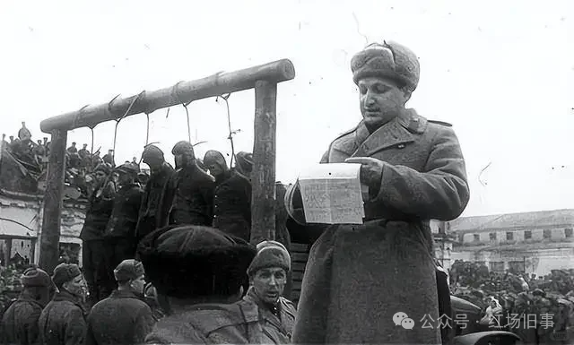
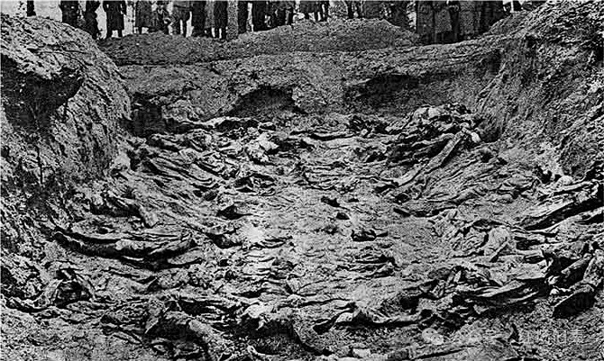

卡廷惨案、大清洗、饥荒：那些年被掩盖的真相，一年内全部曝光
文字与图片版权归各自权利人所有。 查看公众号原文 ↗
1987年，莫斯科的一个普通夜晚电视机前，数百万苏联人屏住呼吸。屏幕上正在播放一部禁映多年的电影——《忏悔》。导演用寓言讲述了一个独裁者的故事，明眼人都知道，那是在说斯大林。放在五年前，这部电影的导演会被抓进监狱。但此刻，它正在中央电视台上映。第二天，人们谈论的是一个更根本的问题：那些年被掩盖的，还有多少？1987年到1990年，苏联人经历了一场前所未有的真相海啸。大清洗的数字、卡廷惨案的真相、饥荒的规模、强制迁徙的细节——一个个被封印了半个世纪的秘密，像决堤的洪水般涌来。人们以为自己想要真相。但当真相真的到来时，他们才发现：有些东西比谎言更难以承受。
一、历史的封印被打开戈尔巴乔夫1985年提出“公开性”，最初只是想借助舆论推动改革，让媒体批评官僚、揭露腐败。但很快，批评的对象从“现在的官僚”变成了“过去的制度”。1987年，苏共中央成立专门委员会，重新研究1930至20世纪50年代的迫害事件。委员会调阅尘封档案，发现了令人震惊的真相。

1988年，第一批恢复名誉的名单公布：布哈林、李可夫、图哈切夫斯基……这些被处决的“人民敌人”，被宣布为“无罪”。但问题是：如果当年他们是冤案，那么整个制度该如何解释？
二、数字与真相随着档案解密，大清洗的真实规模浮出水面。1954年，内务部部长曾向赫鲁晓夫报告：1930年至1953年间，因政治原因被判刑的约370万人，其中76.5万人被处决。但委员会发现，这个数字被大大低估了。它没有统计集中营中死亡的、没有统计被镇压的农民和强制迁徙的少数民族。如果把集体化时期的饥荒算进去，受害人数远超千万。这些数字通过报刊、电视铺天盖地传播。人们第一次知道，那个被歌颂了三十年的“伟大领袖”，背后竟然有这样的黑暗。一个普通读者写信给编辑部：“我父亲在1937年失踪。我一直相信他是‘人民敌人’。现在你们告诉我他是无辜的。那我这五十年的信仰是什么？”这封信，是整个时代的缩影。
三、卡廷：那个让所有人沉默的档案在所有真相中，最震撼的是卡廷惨案。

1940年，约2.2万名波兰军官在卡廷森林被集体枪决。近半个世纪，苏联坚称是德国人干的。1990年4月，戈尔巴乔夫向波兰转交部分档案，承认是“斯大林主义的罪行”。但最核心的密件——贝利亚给斯大林的报告，仍然锁在保险柜里。1991年12月23日，戈尔巴乔夫即将向叶利钦移交权力。工作人员担心档案命运，建议他亲自查看。当两人共同打开密封的档案袋时，里面是贝利亚1940年3月的报告，以及斯大林的亲笔签名：同意枪决25700人。戈尔巴乔夫后来回忆：“我们的头发都竖起来了。”1992年，密档副本转交波兰。半个世纪的谎言，终于被戳穿。苏联一直说卡廷是纳粹的罪行。现在人们知道：扣动扳机的，是他们自己的国家机器。
四、被遗忘的伤口公开性还揭露了另一些伤口。1932—1933年，乌克兰大饥荒，数百万人饿死。档案显示，那一年粮食产量不低，只是大量出口换外汇，农村被搬空了粮仓。还有强制迁徙。1944年，整个车臣民族被用火车运往中亚，沿途死亡无数。幸存者第一次有机会讲述他们的故事。一个车臣老人对着摄像机说：“我们被赶上车厢时，以为是要送我们去劳动。后来才知道，那是一张单程票。”
五、媒体与组织真相涌来的同时，媒体也变了。1986年以前，苏联报纸只有一种声音。1987年以后，报纸开始登读者来信——骂官僚的、诉苦买不到东西的。1990年，《新闻法》废除新闻审查。短短一年内，上千种非正式出版物涌现。与此同时，“非正式组织”爆炸式增长。到1990年，非正式组织超过9万个，包括政党、运动、基金会。1990年3月，苏联修改宪法第六条，取消“苏共领导地位”条款。多党制合法化。一夜之间，苏共不再是“执政党”，而是众多政党中的一个。
六、失去解释历史的权力公开性的最致命后果，是苏共失去了解释历史的权力。几十年来，苏共的合法性建立在两个基础上：十月革命开创人类新纪元，斯大林领导打败法西斯。但真相揭开了另一面：胜利的代价是数百万人的牺牲；斯大林杀了太多本应指挥战争的将领。人们开始问：如果历史是错的，那么现实呢？如果过去被欺骗，那么现在呢？1990年，民意调查显示：只有不到20%的苏联人认为苏共代表他们的利益。大多数人不相信党，不相信报纸，不指望改革。当一个政权失去解释历史的权力，它就失去了定义“我们是谁”的能力。当一个国家的人民不再相信共同的叙事，这个国家就只剩地理意义上的存在。1991年“八一九”政变时，民众走上街头保卫叶利钦，却没有一个人保卫苏共。不是他们反对社会主义，而是他们已经不相信社会主义还能带来什么。
结语：真相之后1987年，当《忏悔》播出时，一个老妇人看完后说：“我终于知道我丈夫为什么死了。但知道了，又有什么用？”这个问题，是整个公开性时代无法回答的。真相有价值吗？当然有。被欺骗的人民有权知道真相。但真相也有代价。当一个国家的历史突然被撕成两半，当一个民族突然被告知自己崇拜的英雄其实是凶手，当一套维持了七十年的叙事体系瞬间崩塌——留下的不只是真相，还有一片精神废墟。1991年12月25日，克里姆林宫红旗悄然降下。

降旗的人后来接受采访说：“那天晚上，我以为我们会迎来一个新的开始。”“但我没想到，新开始需要旧地基。而旧地基，已经被我们自己挖空了。”公开性打开了潘多拉魔盒。盒子里飞出的是真相，是自由。但盒子最底层，还留着一件东西——那件东西叫信仰的崩塌。当人们把信仰连同谎言一起扔掉之后，才发现：没有信仰的国家，比有谎言的国家更难以生存。